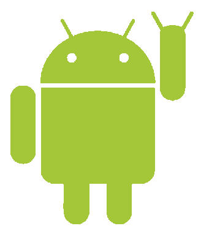

Statusreport
2. April 2012
by Steve Liedtke

BremenGTUG in Numbers
- 5 regulars' tables
- 8 Talks
- 2 Hackathons
- 2 Android apps in development, Backend, Chrome Ext.
- on an average of 13 members

Sponsors
BEST WESTERN Hotel zur Post

IT-Services Jan Stalhut

team neusta
March events: Regulars' table
- Talk about node.js from Malte Legenhausen, John Philip Schnake and André König
-
Check out the presentation
or watch the talk on YouTube
-
Interested in Javascript?
Follow Bremen.js on Google+
March events: CEBIT in Hannover
- Trip wasn't organized by Bremen GTUG
- Small group of 6 people
-
Google presented Google+
-
Conclusion for me:
cebit is getting more and
more a buisness tradeshow.
Not many booths are
interesting for developers.
March events: droidcon in Berlin
- Android Conference in Berlin
- Organized by the Community
- Bremen GTUG members participated (5 members)
-
Berlin GTUG organized
additional events:
i.e. hackathon,
droidcon Monday
and barcamp
March events: MobileTechConference in Munich
- Matthias Friedrich won a ticket! Congrats ;-)
- So please tell us ... how was it?
Upcoming events
-
Regulars' table in May - 7th May
- Google I/O Extended - 27th till 29th June
Announcement
- Google Technology User Groups are going through a change
- Moving from gtugs.org to the developer.google.com page
- GTUG is renamed to GDG
GTUG to GDG
- GDG -> Google Developer Group
- Whats new? New name, new brand, new site, the rest stays
- When is it happening? Until IO 2012! Maybe pretty soon ;-)
6th Regulars' table
-
The Go Programming Language
by Frank Müller
- Open discussion
Thank you!